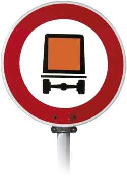

Wird die Obergrenze für eine Kleinmenge überschritten, sind alle Vorschriften der GGVSEB zu beachten. Hierzu gehören selbstverständlich auch die Grundregeln, die bei der Beförderung kleiner Mengen einzuhalten sind (siehe Abschnitt "Kleinmengenregelung"). Hinzu kommen folgende Vorschriften:
Außer der Fahrzeugbesatzung – dem Fahrzeugführer und dem Beifahrer sowie Personen, die im Auftrag des Beförderers im Fahrzeug mitfahren, um die gefährlichen Güter zu verwenden – dürfen bei der Beförderung gefährlicher Güter keine weiteren (betriebsfremden) Personen mitgenommen werden.
Es müssen Beförderungspapiere mitgeführt werden, die folgende Angaben enthalten:
Für den Fahrzeugführer ist eine besondere Ausbildung erforderlich (ADR-Bescheinigung).
Das Unfallmerkblatt enthält in knapper Form Informationen zum Verhalten bei Unfällen oder Zwischenfällen, die sich während der Beförderung ereignen können. Das Muster dieses Unfallmerkblattes ist im Internet unter http://www.GISBAU.de (Formulare) zu finden.
Folgende Ausrüstung ist vorgeschrieben:
Die Fahrzeuge sind vorn und hinten mit orangefarbenen, rechteckigen, schwarz umrandeten Tafeln zu kennzeichnen. Die Warntafeln müssen entfernt oder verdeckt werden, wenn keine gefährlichen Güter oder deren Reste auf dem Fahrzeug befördert werden.
Das Verkehrszeichen "Verbot von Gefahrguttransporten" (siehe hier) verbietet die Weiterfahrt von gekennzeichneten Transportern. Mit diesem Verkehrszeichen sind nicht nur Tunneldurchfahrten, sondern auch viele andere Straßenabschnitte – insbesondere abschüssige Zufahrten zu Ortsdurchfahrten – für Gefahrguttransporte gesperrt.
Die Unternehmen müssen einen Gefahrgutbeauftragten bestellen und ausbilden lassen.Diese Aufgabe kann vom Unternehmer, von einem Beschäftigten oder von einer externen Person wahrgenommen werden. Der Gefahrgutbeauftragte muss seine Fachkunde durch einen entsprechenden Schulungsnachweis belegen.
Es sind weitere Änderungen der GGVSEB geplant. Die Berufsgenossenschaft der Bauwirtschaft wird auf diese Änderungen rechtzeitig hinweisen.